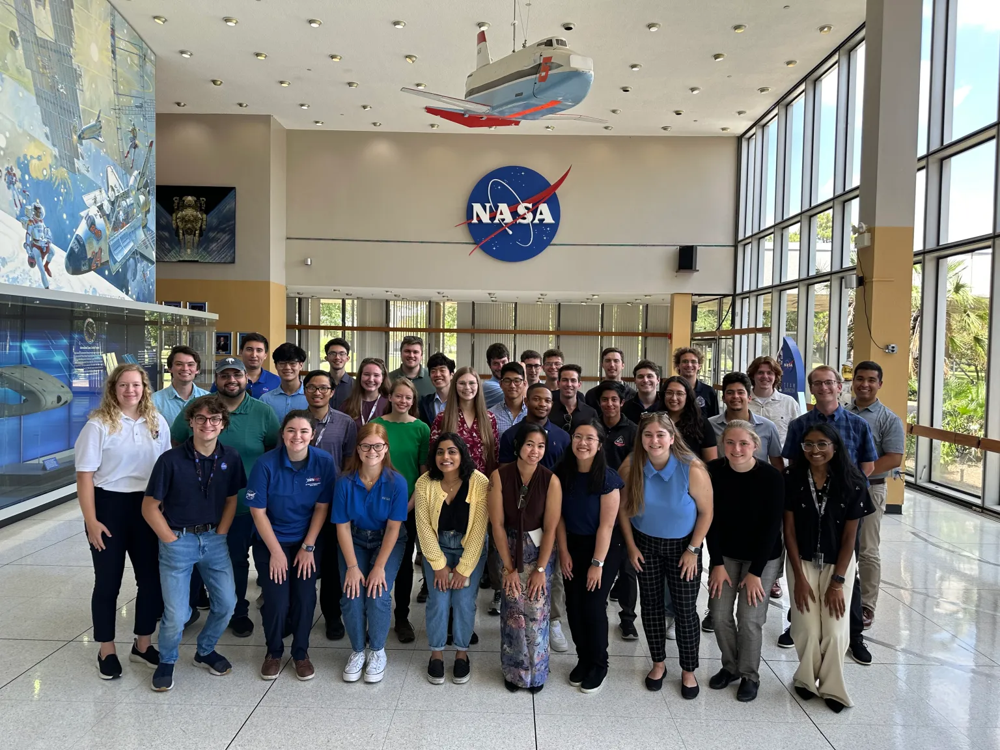

For people looking to work as an astronomer, the first step is to get a Bachelor's degree in physics, astronomy, astrophysics, or some other related field. Beyond that, all astronomers generally must recieve a Ph.D. in a field closely tied to astronomy. Because the field of astronomy is so small, there isn't standardized certifications like there is for larger fields, like computer science. For internships, there are some opportunities, such as NASA's OSTEM and pathways internship programs, which allow college students and even high schoolers to work alongside astronomers, physicists, and engineers alike at one of their facilities. However, for astronomers, success is generally achieved by simply contributing to meaningful research and demonstrating passion and excellence in the field, rather than some sort of inherently valuable title or certification.
